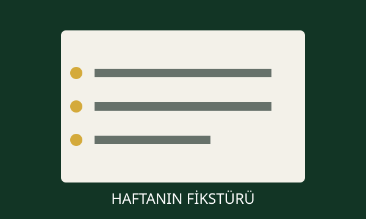

FUTMAC ÖZEL
FUTMAC ÖZELFUTBOL
E-MAC'TE YENİ SEZON BAŞLIYOR!
2026-2027 fantazi futbol sezonunda fikstür, transfer bütçesi ve rekabet yeniden şekilleniyor. Açılış haftasının bütün başlıkları FUTMAC dosyasında.
HABERİN DEVAMI »FUTMAC ÖZEL2026-2027 fantazi futbol sezonunda fikstür, transfer bütçesi ve rekabet yeniden şekilleniyor. Açılış haftasının bütün başlıkları FUTMAC dosyasında.
HABERİN DEVAMI »


İlan edilen derbinin galibine +30, mağlubuna -40 fantazi puanı uygulanacak.
Teknik direktörler 90 milyon TL bütçe içinde ilk on birlerini şekillendiriyor.
Fiyat-performans oyuncuları ve kadro dengesine ilişkin son notlar.

En iyi oyuncu, sürpriz oyuncu, haftanın takımı ve Ayın Takımı seçimi.

Sezon başlamadan önce E-Mac Turka'nın gündemine kısa bir bakış...
DEVAMINI OKU »
Maç sistemi, bütçe, ödüller, derbiler ve yönetim esasları.